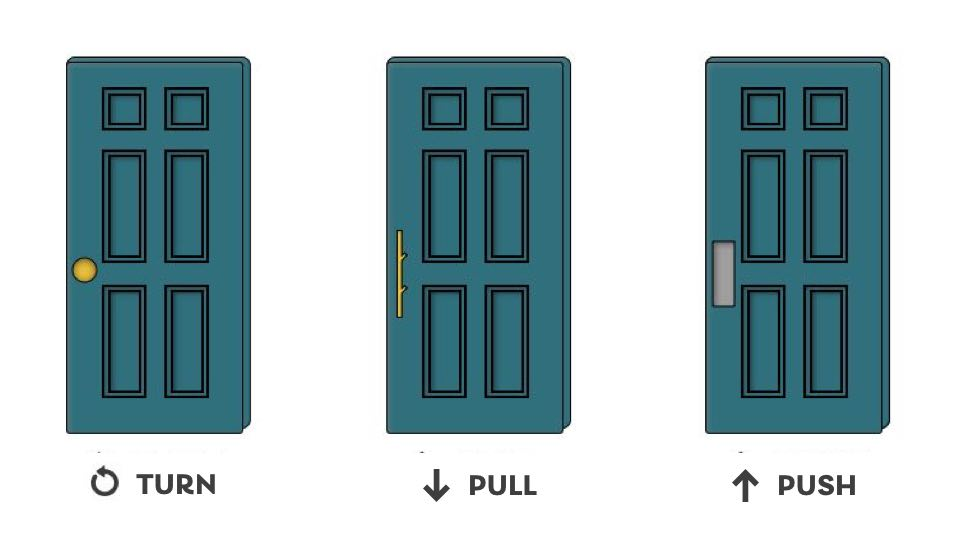
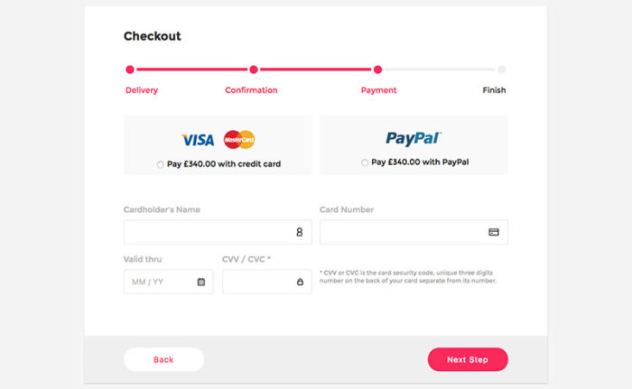

The principle of scale refers to using relative size to signal importance and rank in a composition.
When this principle is used properly, the most important elements in a design are bigger than the ones that are less important.
The reason behind this principle is simple: when something is big, it’s more likely to be noticed.
Visual Heirarchy:
The principle of visual hierarchy refers to guiding the eye on the page so that it attends to different design elements in the order of their importance.
A layout with a good visual hierarchy will be easily understood by your users.
Visual hierarchy controls the delivery of the experience. If you have a hard time figuring out where to look on a page, it’s more than likely that its layout is missing a clear visual hierarchy.
Balance:
The principle of balance refers to a satisfying arrangement or proportion of design elements.
Symmetrical: elements are symmetrically distributed relative to the central imaginary axis.
Asymmetrical: elements are asymmetrically distributed relative to the central axis.
Radial: elements radiate out from a central, common point in a circular direction.
Contrast:
The principle of contrast refers to the juxtaposition of visually dissimilar elements in order to convey the fact that these elements are different.
In other words, contrast provides the eye with a noticeable difference.
The principle of contrast is often applied through color. For example, red is frequently used in UI designs, especially on iOS, to signify deleting. The bright color signals that a red element is different from the rest.
Gestalt:
Gestalt principles explain how humans simplify and organize complex images that consist of many elements, by subconsciously arranging the parts into an organized system that creates a whole, rather than interpreting them as a series of disparate elements.
In other words, Gestalt principles capture our tendency to perceive the whole as opposed to the individual elements.
User Interface
5 Planes of U.X:
Surface – Visual User Interface Design
Skeleton – Navigation and Layout
Structure – Information Architecture
Scope – Requirements and Specifications
Strategy – User needs and business goals
Norman's Principal’s of Design
Visibility:
Users should know, just by looking at an interface, what their options are and how to access them.
This is particularly important in mobile applications because it is a challenge to make everything visible within the limited screen space; hence, it is essential to include only the options that are needed.
Feedback:
Feedback is the principle of making it clear to the user what action has been taken and what has been accomplished
Many forms of feedback exist in interaction design, including visual, tactile, audio, and more.
The key is to design the experience to never leave the user guessing about what action they have taken and the consequence of doing so.
Affordance:
Affordance is the link between how things look and how they’re used.

Mapping:
Mapping is the idea that, in a good design, the controls for something will closely resemble their effect.
This is best understood with the vertical scroll bar; it tells you where you currently are, and the page moves down at the same pace and sensitivity as the vertical bar.
Constraints:
Constraints restrict a particular form of user interaction with an interface.
This is essential because the user could become overwhelmed with the range of possibilities available through an interface.
An example of a constraint is an online form that does not allow users to enter letters into a phone number field.

Consistency:
People learn new things and manage better when they recognize patterns.
Consistency is key for these patterns to be recognized and learned by users.
If similar-looking things do not produce a similar output, the user is bound to become frustrated.
Accessibility
Aims of Accessibility:
To Understand how people with disabilities access web pages and the technology they use.